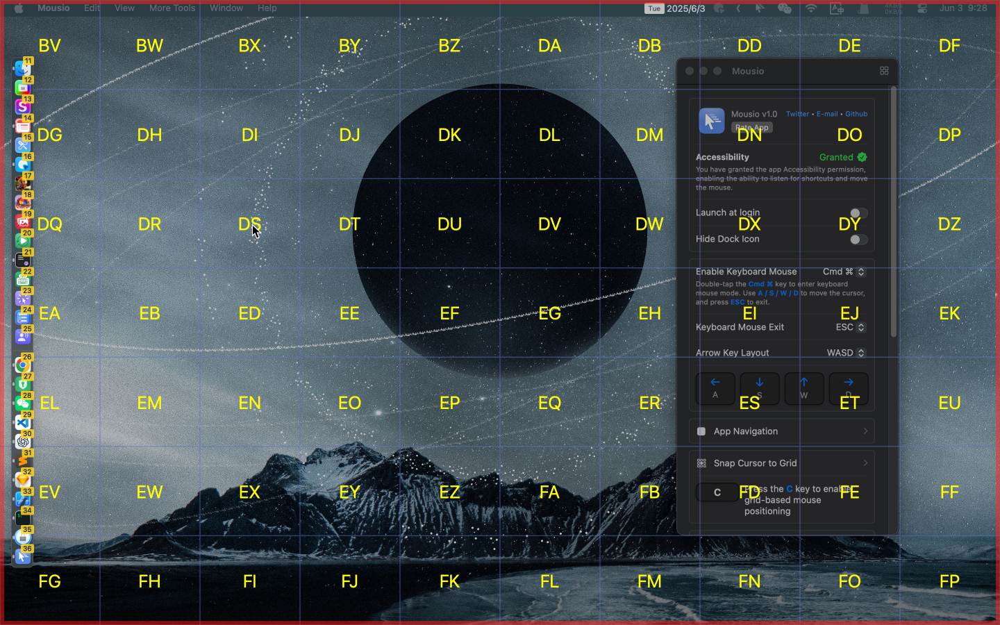
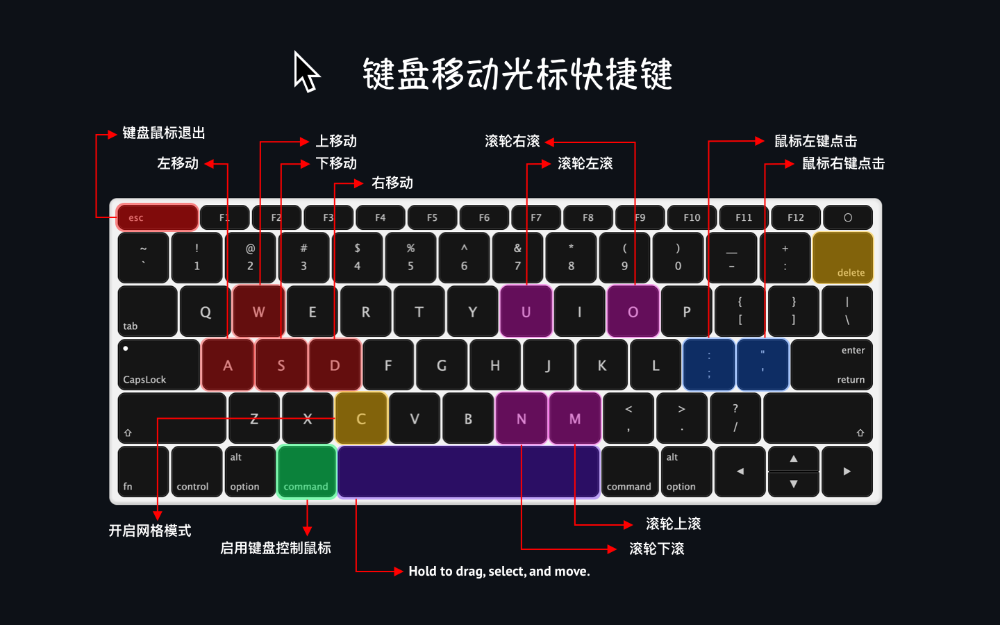

无需动鼠标，一切尽在指尖！使用键盘即可快速移动、点击和拖动鼠标光标。提升效率，保持专注。


功能特点
- 键盘驱动光标控制：使用快捷键即时移动和定位鼠标指针
- 网格导航模式：通过可调整大小的屏幕网格实现精准导航
- 多显示器支持：无缝在多个显示器之间移动光标
- 自定义 Dock 样式启动器：创建可自定义的 Dock 样式面板，快速访问应用或操作
- 焦点屏幕：高亮鼠标光标所在屏幕，聚焦当前操作区域
快捷键

- 启用键盘鼠标模式：Ctrl ⌃ / Cmd ⌘ / Opt ⌥ 双击
- 退出键盘鼠标模式：ESC
- 方向键布局：
- W ↑ A ← S ↓ D →
- H ← J ↓ K ↑ L →
- J ↓ K ↑ I → L →
- 启用网格导航模式：C
- 网格导航模式重置搜索：删除 ⌫
- 按住 空格 ␣，配合 A S W D 移动窗口、选中文本和移动文件
- 鼠标左键点击：; 或 :
- 鼠标右键点击：' 或 "
- 鼠标滚轮滚动：
- ⬅️ 左滚动：U
- ➡️ 右滚动：O
- ⬇️ 下滚动：N
- ⬆️ 上滚动：M